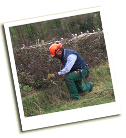

Os Hoskyns The
Isle of Wight Hedgelaying Competition is a great day out. There is plenty to
see and do. It's a perfect opportunity for you to see this ancient craft in
action and there are always plenty of things to photograph. There are some
pictures of recent Isle of Wight hedgelaying competitions on our
Flickr photo group.
If you would like to use the images or would like a higher resolution version,
please contact the Isle of Wight Hedgerow Group.
Upload your pictures
Upload your pictures to our Flickr
photo group! The annual competition is a great opportunity for photographers,
and many good pictures have been taken over the years. If you have some, and
are willing to share them - especially from previous years - please consider
uploading them to Flickr. If
you don't know how to use Flickr contact us, we can
help. Here are some samples from our gallery from previous years.